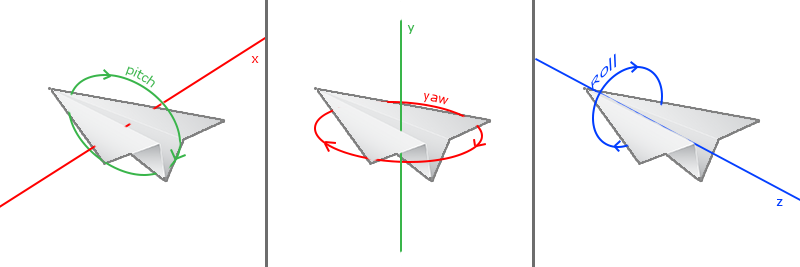

摄像机
这一节和原教程差异很大，读者可以查看原教程：learnopengl-cn learnopengl
这一节主要是从作者的思维角度去构造一个摄像机类，在作者构造的摄像机类中并不会使用GLM.LookAt函数。
在上一节中我们已经可以看到一个真正3D的世界了，我们通过使用View Matrix来构造了一个假想的摄像机，而上一节的Matrix我们仅仅是往后面移动了3个单位，并没有做一些复杂的操作。比如我们希望在世界坐标中指定相机的位置，并且让相机的镜头直接面对目标物体。如果我们自己构造View Matrix的话需要TranslateRotate等操作才能完成。事实上我们使用GLM.LookAt就可以直接给我们构造一个View Matrix。
Matrix4F LookAt( Vector3F eye, // 相机位置 Vector3F center, // 目标位置 Vector3F up // 相机顶部朝向 (eye + center)只能确定镜头的朝向， ) // 但是相机还可以左右滚动，所以需要一个up向量固定相机
但是这一节中作者并不打算过多介绍GLM.LookAt，原版教程中使用GLM.LookAt构建了一个摄像机类。但是作者觉得原版教程中构造的摄像机类并不完美，所以作者自己构建了一个可以无死角移动和旋转的摄像机。提供了两种模式，可用于第一人称射击游戏或者飞行类游戏。
并没有摄像机
事实上在OpenGL中并没有摄像机这个东西，摄像机只是我们自己假想出来的一个东西，还记得上一节中的代码吗？
var matV = GLM.Translate(new Vector3F(0, 0, -3)); // 其实摄像机的位置并不在(0,0,-3)位置 下一节中介绍
而上面的效果为：摄像机在(0,0,3)的位置向-Z方向观察的结果。是的你这里并没有看错摄像机的位置并不在(0,0,-3)的位置，也不在(0,0,3)，而真实的摄像机位置是(0,0,1)。
😱😱😱😱😱😱 什么情况？？？？？？
上面已经提到过了，OpenGL中并没有摄像机这个东西，在你好 三角形我们也从来没有用过摄像机这个东西，可是我们依然看到了三角形。OpenGL始终都是从世界坐标的(0,0,1)位置向(0,0,0)方向去渲染画面。这一点是我们无法改变的。但是。。。我们可以改变的是物体的位置。
所以上一节我们提到的三个矩阵M-V-P改变的都是模型位置。我们通过Model Matrix改变物体坐标点在世界坐标的位置，而View Matrix并不是在设置摄像机的位置，而是在Model Matrix的基础上再进行一些改变，让它离世界坐标远一点，这样看起来就像是有一个摄像机在很远的位置进行拍摄，同样Projection Matrix也只是在刚才的变换基础上进一步的加上投影效果，M-V-P并不是三个参数，因为M*V*P只会得到一个矩阵。只是我们习惯将它们分开表示，让逻辑变得清晰。
所以为什么说(0,0,-3)看上去就像是相机在(0,0,3)的位置进行的拍摄，而真实的相机位置却又在(0,0,1)，这个-3的作用是让物体的Z-3，而并不是在设置摄像机的位置。

由于OpenGL并没有摄像机这个东西，如果我们一定要创建一个摄像机的话，也只能把它放在(0,0,1)这个位置，因为OpenGL就是从这里开始渲染画面的。但是。。。因为位置都是都是相对的，我们并不一定要设置摄像机的位置。如上图(图是网上偷来的)，我们希望摄像机在(2,0,3)向左旋转33.7度进行拍摄。其实我们也可以让相机在(0,0,0)的位置，并且让物体移动(-2,0,-3)并且旋转-33.7度，效果也是一样的。而要让物体旋转平移等操作，我们使用Matrix就能完成，而我们把这个Matrix叫做View Matrix，这也就是为什么我们会说View Matrix相当于摄像机。因为View Matrix所保存的就是让物体变换到摄像机的相对位置去。
构建摄像机
如果我们需要去构建一个摄像机类，那么这个类的核心功能一定是如何创建一个View Matrix。
class GLCamera{ public Matrix4F ViewMatrix{get; private set;} }
为什么需要构建一个摄像机类？它的核心功能不就是创建一个View Matrix吗？我们自己也可以构建，为什么一定要放在一个类里面去构建？是的，其实摄像机类并不是必须的。之所以用一个类去构建View Matrix，仅仅是想隐藏一些复杂的过程，提供一些操作接口。而使用者无需关心View Matrix是如何被构建出来的。比如提供一个GLCamera.MoveLeft(float)的功能，让相机向左边移动一定距离，或者一些更加复杂的操作。
在GLCamera类中我们需要使用两个矩阵Translate MatrixRotate Matrix。通过Rotate * Translate得到View Matrix。
class GLCamera{ public Matrix4F ViewMatrix{get; private set;} public Vector3F Position{get; private set;} // 保存相机当前的位置 private Matrix4F m_mat4_rotate = Matrix4F.Identity; // 保存旋转的操作 private void UpdateMatrix() { // GLCamera提供了很多操作，一些操作需要重新刷新 ViewMatrix var mat = m_mat4_rotate; // 当前所有的旋转操作 mat.Translate(-this.Positon); // 取反是希望物体向反方向移动，Position只是我们假想出来的相机位置。 this.ViewMatrix = mat; // = m_mat4_rotate * GLM.Translate(-this.Position) } }
其实平移是很好处理的，直接使用GLCamera.Position构建一个平移矩阵就可以了。但是旋转就有点复杂了。
建立相机坐标系
为了完成一些复杂的操作我们可能需要构建摄像机自己的坐标系统，而不是使用世界坐标。比如我们希望画面向前移动（游戏人物向前移动），我们可能希望的是朝着摄像机的前方移动，而不是以世界坐标作为参考进行操作。旋转操作也是同样的，我们可能更希望以摄像机当前的姿态进行旋转。所以我们需要添加三个属性。
public Vector3F Forward { get; private set; } public Vector3F UP { get; private set; } public Vector3F Right { get; private set; }
而我们在初始化相机的时候就把这三个值确定
//Forward,Right,UP 构成相机自身坐标系统 this.Forward = new Vector3F(0, 0, -1); //相机朝前向量 this.Right = new Vector3F(1, 0, 0); //相机右侧向量 this.UP = new Vector3F(0, 1, 0); //相机顶部向量
OpenGL是右手坐标系，所以面向我们的是+Z，里面则是-Z。
定义三个向量分别确定摄像机的三个朝向，可以理解为摄像机自己的X(Right)Y(UP)Z(Forward)坐标系统。我们在使用的时候直接当做单位向量，用来表示方向。所以我们的每一次旋转操作都需要重新确定方向。
旋转有三个方向，可以看到Pitch是以X作为参考旋转的，但是我们有自己的Right向量作为参考，而Yaw的时候我们使用UP作为参考，Roll使用Forward作为参考。这样我们可以进行以摄像机自身作为参考的任意旋转了。
旋转
我们有三个向量作为参考，但是在每次旋转之后一定要更新参考系。以Yaw为例。
public void Yaw(float angle) { if (angle == 0 || float.IsNaN(angle)) return; var mat = GLM.GLM.Rotate(angle, -this.UP); // 旋转参考系 Vector4F vec_r = mat * new Vector4F(this.Right, 1); // 计算新的 Right this.Right = new Vector3F(vec_r.X, vec_r.Y, vec_r.Z); Vector4F vec_f = mat * new Vector4F(this.Forward, 1); // 计算新的 Forward this.Forward = new Vector3F(vec_f.X, vec_f.Y, vec_f.Z); m_mat4_rotate *= GLM.GLM.Rotate(angle, this.UP); // 旋转物体 this.UpdateMatrix(); }
可以看到旋转使用UP做参考的时候，但是为什么旋转坐标系和旋转物体使用的不一样？还记得上面说过的吗？OpenGL是没有摄像机的，虽然我们构建一个假想的摄像机，但是我们里面所有的数据都是相对的，我们希望相机向左旋转，实际上我们操作的是让物体向右旋转。我们在上面平移的时候也是使用的-this.Positon。
举一反三我们还可以编写YawLeft(angle)YawRight(angle)让他们去调用Yaw(angle)只是在调用的时候一个使用angle另一个使用-angle，而在YawXXX(angle)中都使用正数。
使用同样的方式我们可以完成PitchRoll的操作。
平移
平移的时候我们无需重新更新ForwardUPRight向量，让它保存原有视角就可以了，仅仅改变位置。我们可以编写一个函数实现瞬间移动。让相机直接移动到某一个位置。
public void Move(Vector3F position) { this.Positon = position; this.UpdateMatrix(); }
甚至我们可以连旋转角度也给重新初始化，比如游戏人物死亡后重新复活的时候可能就需要这样的操作。
public void Reset(Vector3F position, float yawAngle) { this.Positon = position; //重置坐标参考系 this.Forward = new Vector3F(0, 0, -1); //相机朝前向量 this.Right = new Vector3F(1, 0, 0); //相机右侧向量 this.UP = new Vector3F(0, 1, 0); //相机顶部向量 this.Yaw(yawAngle); // 默认希望的水平朝向 }
但是我们可能并不想每一次Move都自己计算一个新的位置传给GLCamera。而是希望能提供一个方向和距离。让后相机朝着指定的方向和距离移动就可以了。
public void Move(Vector3F direction, float distance) { Vector3F vec = direction.GetNormalize() * distance; this.Positon += new Vector3F(vec.X, vec.Y, vec.Z); this.UpdateMatrix(); }
我们用distance*单位向量，可以得到distance在(X,Y,Z)上的分量，然后this.Position加上这些分量就可以了。
有了Move(direction,distance)，同样我们还可以推导出MoveLeft(distance)MoveUp(distance)等函数。
public void MoveLeft(float distance) { this.Move(-this.Right, distance); } public void MoveRight(float distance) { this.Move(this.Right, distance); }
至此一个可以任意旋转和平移的摄像机类我们就构建的差不多了。但是有些时候我们并不希望摄像机的旋转是可以任意的。在一些第一人称射击游戏中，是没有Roll操作的，虽然我们可以不去调用Roll函数，但是Pitch是有限制的。
比如枪向上的角度不能超过90，不然人总是不可能往上一直转180度，然后倒立在地上的吧？所以我们需要限制Pitch的角度。
同样我们Yaw的时候也不能参考相机的UP了，如果不这样的话，假设现在已经Pitch到90度了，枪的准心对着天空，此时左右移动鼠标会发现人在以天空为中心旋转，也就是世界坐标的Y作为参考，而如果依然使用相机的UP作为Yaw的参考，那么Yaw(180)，枪的准心就对准地面了。
而作者同样希望在GLCamera中提供这样的实现。
添加限制
一开始作者提到了两个模式，上面的实现是以相机自身作为参考做变换，也就是以飞机的视角做的变换，而现在我们需要以第一人称的视角去改变一下GLCamera。而这两种模式，作者希望在构造器中确定，一旦确定就无法更改。
所以作者提供了三个构造函数。
public GLCamera(Vector3F position) : this(position, new Vector3F(0, 0, 0)) { } public GLCamera(Vector3F position, Vector3F target) // 初始化的时候确定相机位置，并且对准想拍摄的地方 // 以第一人称视角构建摄像机，并且确定Pitch的角度限制 public GLCamera(Vector3F position, float downWardAngle, float upWardAngle)
所以我们需要一个私有变量来判断当前相机是什么模式。
private bool m_b_lock_up; // 是否锁定UP true则以世界坐标Y作为参考，否则使用this.UP作为参考。 private float m_f_angle_pitch; // lock_up模式下，pitch当前的角度 private float m_f_angle_up; // lock_up模式下，pitch向上的最大角度 private float m_f_angle_down; // lock_up模式下，pitch向上的最大角度
接需要对每个旋转函数进行一些修改，最主要的是Pitch函数的更改
public void Pitch(float angle) { if (angle == 0 || float.IsNaN(angle)) return; if (m_b_lock_up) { // 当是第一人称模式 我们需要对角度进行判断 if (angle > 0) { // down if (m_f_angle_down == m_f_angle_pitch) return; m_f_angle_pitch += angle; if (m_f_angle_pitch > m_f_angle_down) { angle -= m_f_angle_pitch - m_f_angle_down; m_f_angle_pitch = m_f_angle_down; } } else { // up if (m_f_angle_up == m_f_angle_pitch) return; m_f_angle_pitch += angle; if (m_f_angle_pitch < m_f_angle_up) { angle -= m_f_angle_pitch - m_f_angle_up; m_f_angle_pitch = m_f_angle_up; } } } Matrix4F mat = GLM.GLM.Rotate(angle, -this.Right); this.Forward = new Vector3F(mat * new Vector4F(this.Forward, 1)); if (!m_b_lock_up) { this.UP = new Vector3F(mat * new Vector4F(this.UP, 1)); } m_mat4_rotate *= GLM.GLM.Rotate(angle, this.Right); this.UpdateMatrix(); }
然后我们还需要在Roll中添加一个判断
if (m_b_lock_up) return;
而Yaw我们则不用更改，在Yaw中以this.UP作为参考，但是m_b_lock_up会让this.UP一直保存(0,1,0)，如果你也确实希望this.UP始终朝向相机顶部，也是可以的，只是在Yaw就不能使用this.UP作为参考了，需要判断m_b_lock_up，如果是true直接使用new Vector3f(0,1,0)否则使用this.UP在Pitch中继续更新this.UP的值。当然这个看读者的意愿。
更多的代码请参考STLib.OpenGL.GL.Utils.GLCamera.cs，GLCamera已经内置在了STGL项目中。
使用相机
我们使用上一节中的最后一个案例进行改进，让它更像一个游戏场景，首先我们需要添加几个成员变量。
static double m_pos_y = 0; // 鼠标初始位置 static double m_pos_x = 0; static bool m_b_inited; // 当前是否已经初始化鼠标位置 static bool m_b_captured; // 当前GLFW窗口是否已经捕获了鼠标 // 构造一个飞机视角的相机 默认相机在(0,0,3)位置 并且默认朝向(0,0,0)位置， static GLCamera m_camera = new GLCamera(new Vector3F(0, 0, 3)); // 构造一个第一人称视角的相机 // static GLCamera m_camera = new GLCamera(new Vector3F(0, 0, 3), 80, 80);
当我们希望鼠标点进窗口的时候鼠标被GLFW窗口捕获，在我们的窗口初始化好之后，我们需要绑定一个事件。
GLFW.SetMouseButtonCallback(window, onMouseButton); //============================ static void onMouseButton(IntPtr window, int button, int action, int mods) { if (action == GLFW.PRESS) { switch (button) { case GLFW.MOUSE_BUTTON_LEFT: GLFW.SetInputMode(window, GLFW.CURSOR, GLFW.CURSOR_DISABLED); m_b_captured = true; return; } } }
我们希望移动鼠标的时候，场景的视角跟随移动。
GLFW.SetCursorPosCallback(window, OnMouseMove); //============================ static void OnMouseMove(IntPtr window, double xpos, double ypos) { if (!m_b_captured) return; // 如果鼠标没有点进窗口 不做处理 if (!m_b_inited) { m_pos_x = xpos; m_pos_y = ypos; m_b_inited = true; } float f = 0.1f; // 移动速度 var pitch = (float)(ypos - m_pos_y) * f; var yaw = (float)(xpos - m_pos_x) * f; m_camera.Yaw(yaw); // 让相机进行一些旋转操作 m_camera.Pitch(pitch); m_pos_x = xpos; m_pos_y = ypos; }
我们也希望配合一些键盘操作比如WASD。
GLFW.SetKeyCallback(window, OnKeyDown); //============================ static void OnKeyDown(IntPtr window, int key, int scancode, int action, int mods) { switch (key) { case GLFW.KEY_ESCAPE: GLFW.SetInputMode(window, GLFW.CURSOR, GLFW.CURSOR_NORMAL); m_b_captured = false; m_b_inited = false; return; case GLFW.KEY_UP: m_camera.PitchUp(1f); break; case GLFW.KEY_DOWN: m_camera.PitchDown(1f); break; case GLFW.KEY_LEFT: m_camera.YawLeft(1f); break; case GLFW.KEY_RIGHT: m_camera.YawRight(1f); break; case GLFW.KEY_A: m_camera.MoveLeft(.1f); break; case GLFW.KEY_D: m_camera.MoveRight(.1f); break; case GLFW.KEY_W: m_camera.MoveForward(.1f); break; case GLFW.KEY_S: m_camera.MoveBack(.1f); break; case GLFW.KEY_I: m_camera.MoveUp(.1f); break; case GLFW.KEY_K: m_camera.MoveDown(.1f); break; case GLFW.KEY_J: m_camera.RollLeft(1); break; case GLFW.KEY_L: m_camera.RollRight(1); break; } }
然后运行程序看看效果。😁😁😁😁😁是不是有那么一点游戏的感觉了？